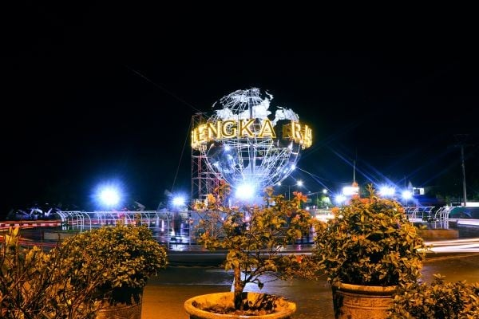
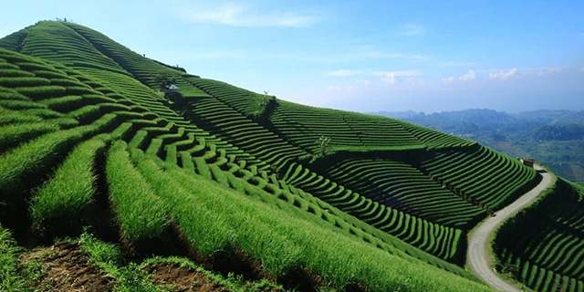
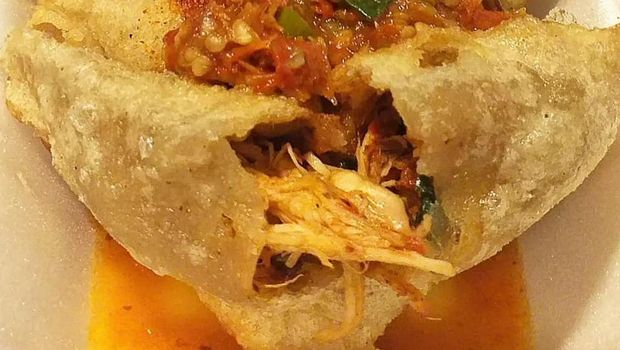

Sejarah

Nama “majalengka” berasal dari dua kata dalam bahasa Cirebon, yaitu “maja” dan “langka”. Namun, ada versi lain tentang asal usul dari kabupaten ini salah satunya dengan nama ini dengan peristiwa pembabatan pohon maja oleh Nyi
Rambut Kasih.
Rambut Kasih merupakan ratu Kerajaan Sindangkasih yang tidak suka dengan orang Cirebon yang mencari buah maja untuk obat-obatan. Hal ini menjadi awal mula nama Majalengka. Menurut versi ini, ketika orang Cirebon datang ke
Sindangkasih, mereka tidak menemukan lagi pohon maja. Karena itu, mereka berkata “maja-e langka” atau “buah maja hilang”.
Wisata

Salah satu destinasi wisata Majalengka yang banyak dikunjungi wisatawan adalah Terasering Panyaweuyan. Tempat ini menyuguhkan panorama alam cantik nan asri, dari gugusan bukit yang ditanami sayuran seperti daun bawang, bawang
merah, selada dan lainnya.
Lainnya

Selain keindahan alam, Majalengka menyimpan segudang keunikan kuliner nan eksostis. Makanan hasil olahan masyarakat Majalengka tidak ditemukan di daerah lain.
Jalakotek adalah makanan khas masakan sunda dari majalengka, jawa barat. Makanan ini ditutupi kulit yang terbuat dari campuran tepung terigu dan tepung tapioka. Bentuknya menyerupai pastel yang berisi tumis tahu dan wortel.
Jalakotek mudah dijumpai di area sekolah dan pusat jajanan khas majalengka